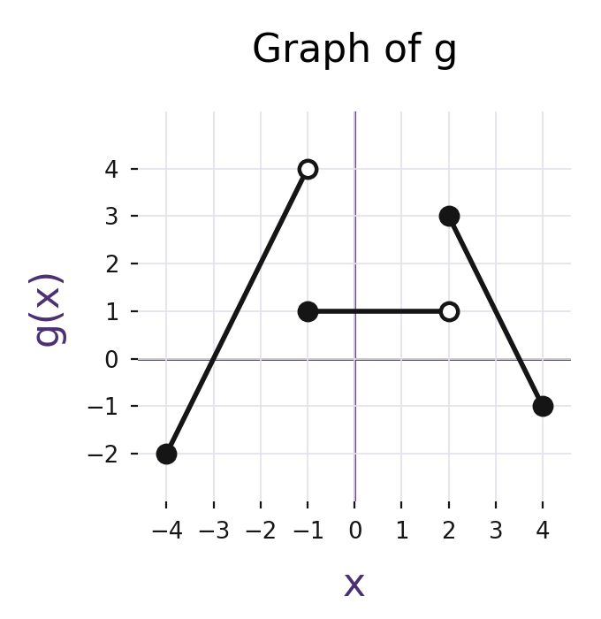

apcalcab-frq-u13-002
Graph of g

Accessible description
The graph contains a segment from the filled point (−4, −2) to an open point at (−1, 4); a filled point at (−1, 1); a horizontal segment for −1 < x < 2 at height 1 with an open point at (2, 1); and a segment from the filled point (2, 3) to the filled point (4, −1).